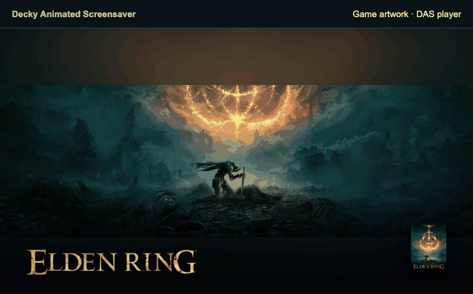
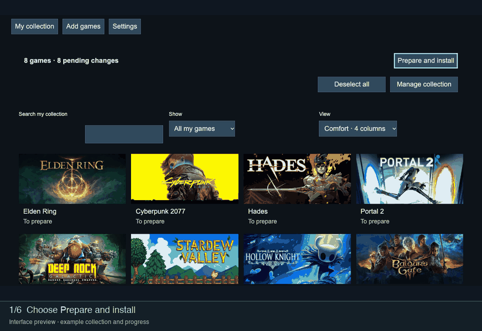
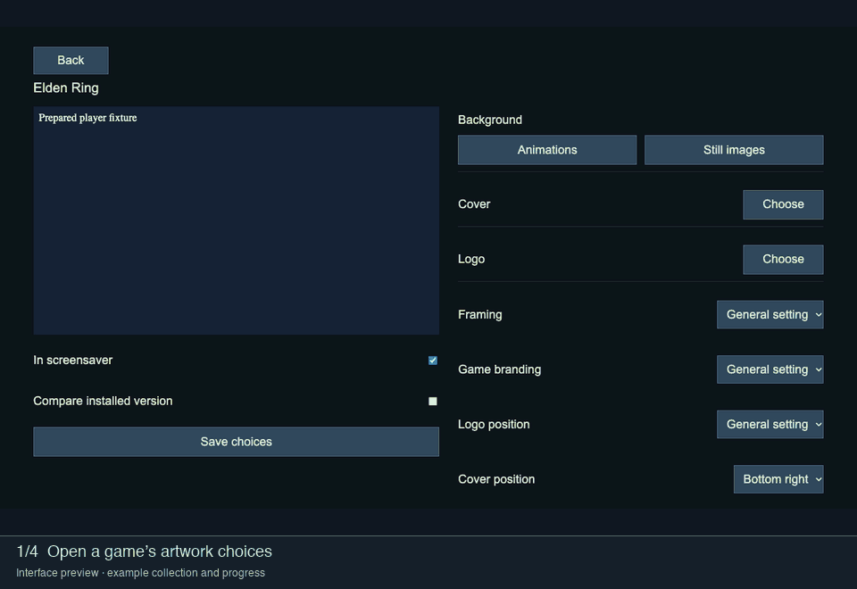
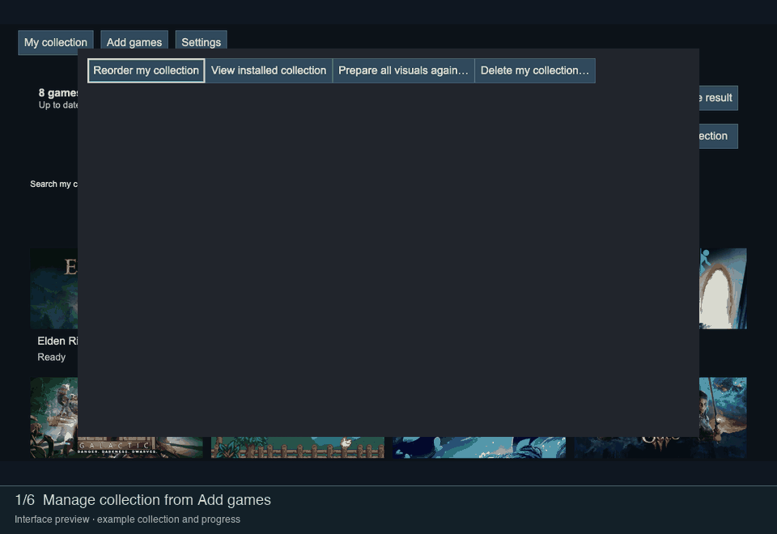

GIF walkthroughs
Installed player

Actual DAS player, recorded in a local browser. Shows Elden Ring and Cyberpunk 2077 with game logos. Playback is independent of GCA.
Prepare a collection

Shows confirmation, preparation progress, pause, resume and completion. Progress and completion are example states. Recorded from the current interface in a local browser, using example preparation states.
Choose artwork

Shows the game sheet, animation selection and saving. Search results use an example selection. Saving leaves changes waiting for preparation.
Reorder games

Shows collection management, moving a game and saving its new order. The local recording simulates controller input. Update the collection to apply the order to Steam.
Optional TV and Faceplate

The TV uses the DAS player. The Faceplate and light bar are rendered illustrations using prepared pixel images. They show different artwork for the same games. Coordinated scene changes in this GIF do not establish measured hardware synchronisation.
Credits and recording notes
Player backgrounds: TUFKAC (Elden Ring) and fewwan (Cyberpunk 2077). Covers: Morente (Elden Ring) and jho (Cyberpunk 2077), via SteamGridDB. Logos: official Steam library artwork. See the full source credits and the media manifest.
Interface thumbnails are official Steam store headers. Their recorded sources and exact file hashes are listed in the credits and media manifest. Game artwork and marks belong to their respective rights holders. The walkthroughs use example data.